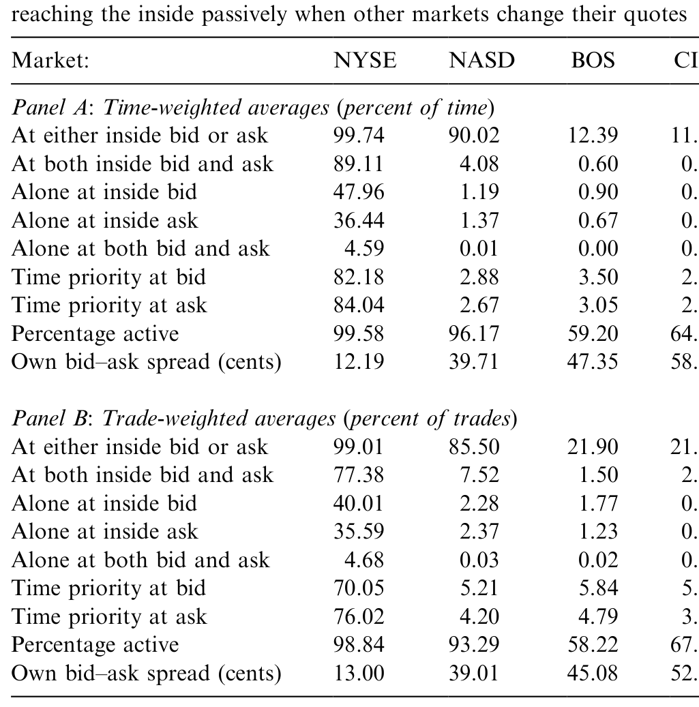
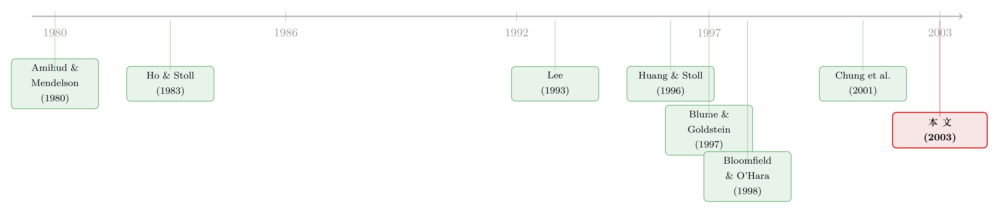

报价，是邀请，还是暗号？——拆开 NYSE 之外那张「成交成本」的账单
本文读的是 Bessembinder (2003, Journal of Financial Economics)：在 100 只大盘 NYSE 股票上，作者把同一笔「场外成交」按"成交时本地市场有没有挂出有竞争力的报价"一分为二，发现当本地市场挂出竞争性报价时，场外成交的成本几乎与 NYSE 持平；而当报价不具竞争力（即靠优惠路由协议拉来的订单）时，成本显著高于 NYSE。报价因此更像一个"选择性暗号"——挂得出好价，就给你好执行。
1 引言：一个被「优惠路由」搅浑的市场
先抛一个看似简单、实则纠缠了金融监管几十年的问题：一只在纽交所（NYSE）挂牌的股票，凭什么可以同时在七个地方成交？
2000 年的美国股市就是这样一幅图景。一只 NYSE 股票，除了在母市场 NYSE 撮合，还能在波士顿、费城、辛辛那提、芝加哥、太平洋五家区域交易所成交，能在全国证券交易商协会（NASD）的"第三市场"成交，还能流向 Instinet、Island 这样的电子撮合网络。支持"集中交易"的人说：把所有订单赶进一个市场，每一张单子都能和其他所有显示出来的单子碰面，最理想的形态是一个带价格优先 / 时间优先 (price/time priority) 规则的中心限价订单簿 (central limit-order book, CLOB)——谁报价更好谁先成交，价格一样就谁挂得早谁先成交。这套规则会逼着流动性供给者老老实实把交易意愿亮在报价上。
但反对者立刻指出现实里的一道暗门：决定一张订单去哪儿成交的，往往不是投资者本人，而是替他下单的券商。而券商和市场之间，存在一种叫做优惠路由协议 (preferencing agreement) 的安排——做市商付钱给券商（即订单流付费 (payment for order flow, PFOF)），换取券商把订单源源不断地送过来；或者券商干脆自己内部化 (internalization)，拿自营盘做客户的对手方。这些订单常常压根没机会去和别处更好的报价碰面。
优惠路由协议下成交的订单，通常会按"全市场最优报价"成交——所以价格优先没被违反，但时间优先几乎一定被违反。问题在于：当 NYSE 上还存在"价格改进"（在最优买卖价之内成交）的可能时，一笔仅仅"匹配"了最优报价的订单，真的拿到了"最佳执行 (best execution)"吗？
前 SEC 主席 Arthur Levitt 当年就把话挑明了："我担心，订单流付费、内部化等做法，会让最佳执行这件事，沦为券商和客户之间的利益冲突。"——监管的焦虑摆在台面上，可学术上始终缺一份干净的证据：报价竞争到底是真的，还是只是橱窗里的摆设？
这正是本文要回答的。作者给了一个特别聪明的"两端"思想实验，作为度量现实的标尺：
- 极端一：所有订单都按优惠协议或预设规则路由。那么报价毫无意义——报价不会随市场状况系统性地变化，成交去向也和报价竞争力无关；但成交成本可以跨市场不同，因为"订单流付费"这类成本总得从执行成本里捞回来。
- 极端二：价格优先和时间优先在所有市场间被严格执行。那么报价就是一切——报价会被高度策略化地摆布，成交去向完全由报价决定（交易规模、交易者身份等通通失去解释力），而且既然每笔单子都打在全市场最优报价上，成交成本将与成交地点无关。
真实的市场，落在这条连续谱的哪一段？这就是全文反复要钉死的那一个核心。
2 怎么量成本：把一笔成交拆成三块
要回答这个问题，先得有一把量"成交成本"的尺子。作者用的是微观结构里的经典三件套。
第一块，有效半价差 (effective half-spread)——衡量成交价离报价中间价有多远（中间价被当作股票"真实价值"的代理）。对股票 \(i\) 在 \(t\) 时刻的成交：
$$ \text{EffSpread}_{it} = I_{it}\,(P_{it} - M_{it}) $$
其中 \(I_{it}\) 是方向哑变量，客户主动买为 $+1$、主动卖为 $-1$（用 Ellis、Michaely、O'Hara (2000) 的算法判定方向），\(P_{it}\) 是成交价，\(M_{it}\) 是当时 NBBO（全国最佳买卖报价，National Best Bid and Offer）的中间价。
但有效半价差里混着两样东西：一部分是做市商对"知情交易"的防御（信息成本），一部分才是它真正赚到的流动性补偿。于是有第二块，价格冲击 (price impact)——成交后 10 分钟内中间价的同向变动，专门捕捉那块逆向选择/信息成分：
$$ \text{PriceImpact}_{it} = I_{it}\,(M_{i,t+10} - M_{it}) $$
两者一减，得到第三块、也是全文最吃劲的一个量——已实现半价差 (realized half-spread)：
这个分解为什么关键？因为它能把"投资者付了多少"和"中间商赚了多少"分开。如果某个市场的有效半价差不高、但它专挑"没信息"的小单做（价格冲击极低），那它的已实现半价差——也就是它的毛利——可能反而高得离谱。这正是后文揭穿"优惠路由"的那把手术刀。
接着，全文真正的识别巧思，不在公式里，而在一次切割：把所有场外（非 NYSE）成交，按"成交那一刻、本地市场有没有挂出与 NBBO 一致的竞争性报价"一分为二。
- 若本地市场当时正挂着竞争性报价——说明做市商主动亮了价、像是在"招手"；
- 若本地市场当时报价并不占优，订单却仍然在这里成交——那这笔单子多半是顺着优惠协议被"安排"过来的。
把这两类的执行成本，分别和"配对的 NYSE 成交"去比。两端思想实验在这里就有了实证含义：极端一预测两类成本都跟 NYSE 不同；极端二预测两类成本都跟 NYSE 一样。真实答案会是什么？先按下不表。
3 数据：100 只大盘股，2000 年 6 月，七个战场
样本是 2000 年 6 月、按市值排序的 100 只最大的 NYSE 普通股（剔除了股价超 5 万美元、价差宽达 200 美元的伯克希尔）。挑大盘股，是因为它们最活跃、也最招场外流动性供给者的"觊觎"。数据来自 NYSE 提供的 TAQ (Trade and Quote) 数据库。
原始有 5.40 million 笔成交、11.55 million 条报价；过滤掉错误记录、开盘前（9:45 a.m. 之前）的成交、以及 NBBO 价差非正的时段后，分析建立在 4.933 million 笔成交之上。七个战场分别是：NYSE、NASD（第三市场）、波士顿（BOS）、辛辛那提（CIN）、芝加哥（CHI）、太平洋（PAC）、费城（PHI）。
市场份额先给一个直观的全景：NYSE 拿下 51.7% 的成交笔数，NASD 19.4%，五家区域所合计 28.9%。但这只是"笔数"。一旦换成"成交量"，NYSE 的份额飙到 84.9%——为什么？因为大单几乎都回流 NYSE：超过 5000 股的大单里，NYSE 吃下 93.6%；而不足 500 股的小单里，NYSE 只占 33.8%。换句话说，场外市场（尤其 NASD 和区域所）做的基本是小单生意：场外的平均成交规模从太平洋所的 419 股到 NASD 的 580 股不等，而 NYSE 平均 2828 股，全样本平均 1741 股。
这个"大小单分流"的事实，本身就已经在向极端二泼冷水了：如果报价是一切，交易规模就不该这么系统性地决定成交去向。
4 三个发现：报价会说话，但不是它一个人说了算
发现一：报价确实随市场状况策略性地变动。作者用逻辑回归考察"一条新报价会不会改进现有报价"。结论很有微观结构的味道：市场越波动，新报价越不愿意去改进现价（怕被知情者打穿）；价差越宽，新报价越愿意去改进（有利可图）；而场外市场的报价在市场更活跃时更可能变得有竞争力。一个有意思的不对称：NYSE 挂出的竞争性报价，规模往往比它的非竞争性报价更小；而场外挂出的竞争性报价，规模反而更大——场外做市商似乎是在用"大尺寸的好报价"高调招手。
发现二：报价竞争力确实左右成交去向，但远非全部。多元逻辑回归显示，拥有价格优先会显著提高成交概率（这和 Blume & Goldstein (1997) 一致），报价时间优先、报价尺寸也都是显著的决定因素。可与此同时，交易特征（交易规模、订单携带的信息量）同样重要——这就是说，市场离极端二还差得远：37.1% 的全样本成交、以及高达 65.9% 的场外成交，是在"执行市场当时并没有挂出最优报价"的情况下完成的。
这里正好放下那张关于报价关系的统计表：场外报价虽然不是最优，却也提供了非平凡的显示流动性——它们几乎总能（95.4% 的时间）匹配 NYSE 报价的至少一侧，并且大约 11% 的时间能在没有 NYSE 参与下、独立确立最优报价的一侧。

Table 3: reports several statistics concerning relations between quotations
（关于优惠路由如何系统性地压低报价竞争性、拉宽价差，Nasdaq 上有一段更直接的证据，可参见《order-preferencing-and-market-quality-on-nasdaq-before-and》；而散户订单在 PFOF 体系里到底拿到了怎样的执行，则可参见《集中，到底是谁的福利？——一张散户订单的旅行账单》。）
发现三，也是全文的反转与落点：报价是一个"选择性暗号"。先看一组描述性数字。全样本有效半价差平均 3.94 美分；最低的是辛辛那提（3.67）和 NYSE（3.68），最高的是芝加哥（4.48）和波士顿（4.63）。乍一看场外只是略贵一点。可一旦做那把"价格冲击—已实现半价差"的手术刀，画风突变：
- 价格冲击：NYSE 高达
2.75美分，全样本2.17；而场外低得惊人——费城仅0.56、太平洋0.75、辛辛那提1.07。 - 已实现半价差（中间商毛利）：NYSE 只有
0.93美分；场外却普遍高出一截——NASD2.41、波士顿2.97、太平洋高达3.43。
读懂这组数字，谜底就揭开了：场外市场之所以"看上去价差不算太离谱"，是因为它们专挑没有信息含量的小单做，价格冲击极低；可一旦剔除信息成分，它们留给自己的毛利（已实现半价差）是 NYSE 的两到三倍。NYSE 的价格改进比例（29.24%）也明显高于全样本（24.70%）——意味着在 NYSE，更多订单拿到了优于最优报价的成交。
那么最关键的那次"切割"给出了什么？这是全文的诗眼：当场外本地市场挂出竞争性报价时，场外成交的执行成本，与配对的 NYSE 成交几乎一模一样；而当本地市场报价并不具竞争力（即订单是顺着优惠协议被路由过来）时，这些场外成交的成本，显著高于配对的 NYSE 成交。
于是真实市场的坐标被定了下来：它既不在极端一（报价无意义），也不在极端二（报价即一切），而是处在中间——存在实质性的、基于报价的订单流竞争，但这种竞争是不完整的。场外流动性供给者把竞争性报价当作一个有选择的信号：挂得出好价，就是在宣告"此刻我愿意给你比平常更好的执行"，订单也确实系统性地循着这个信号流动；而那些靠优惠协议"包圆"过来、并不响应报价的订单，最终付了更高的成本。
5 文献脉络：从「库存」到「碎片化之争」
这条研究线，是被两股力量拧成的。
一股是做市商定价理论。早在 Amihud & Mendelson (1980) 就把做市商的"库存"问题写进了价差，Ho & Stoll (1983) 进一步刻画了竞争下做市商市场的动态——价差由此被理解为库存成本与竞争的产物。但这些模型说的是"一个市场内"。
另一股，是跨市场的成交成本比较。Lee (1993) 最早系统比较了 NYSE 挂牌股票在不同市场的成交质量，发现场外成交成本略高于 NYSE；Petersen & Fialkowski (1994) 提醒人们"挂牌价差"和"有效价差"是两回事；Huang & Stoll (1996) 用配对法直接对撞了 NASDAQ 与 NYSE 的执行成本。到了 1990 年代后期，焦点收敛到"优惠路由/内部化到底好不好"这个监管痛点上：Easley、Kiefer & O'Hara (1996) 问"买来的订单流是撇奶油还是分润"，Battalio (1997)、Battalio、Greene & Jennings (1997) 用区域所的内部化项目找证据，Dutta & Madhavan (1997) 给出竞争与合谋的理论，Bloomfield & O'Hara (1998) 在实验室里证明优惠路由会抑制竞争，Chung 等 (2001) 则在 Nasdaq 上发现优惠订单越多、报价越不竞争、价差越宽。同一时期，Blume & Goldstein (1997) 证明本地市场报价具竞争力时场外份额会大得多，Macey & O'Hara (1997) 把"最佳执行"的法律含义讲清楚，Harris (1993)、Stoll (2001) 则在更宏观的层面争论"集中还是碎片化"。

本文站在哪儿？它既继承了 Lee (1993)、Bessembinder & Kaufman (1997) "场外略贵"的结论，又把它精确化了：这个"略贵"几乎全部来自那些"报价不竞争却仍被路由过来"的订单。它也把 Blume & Goldstein (1997) 的核心结果，扩展成一套同时纳入报价时间优先、报价尺寸、交易强度、信息含量的成交去向分析。一句话——它把"碎片化好不好"这场旧争论，落到了一个可度量的机制上：报价竞争是真的，只是不完整。
6 评论与延伸（Q&A + 研究方向）
(a) 几个可能的疑问
Q：这是一篇因果论文吗？「识别」靠不靠得住？
严格说，它不是反事实意义上的因果识别，而是一项结构化的描述性证据。它的可信度来自"配对比较"和"按报价竞争力切割"的设计，而非外生冲击。最大的隐忧是：报价是否竞争、订单去哪儿，都可能由同一批未观测的交易特征（如订单的知情程度）内生决定。作者用价格冲击度量信息含量、并在回归里控制交易规模等来缓解这一点，但这只是缓解，不是消除。
Q：「场外成交成本更高」会不会只是因为它们做的是小单？
这正是作者要对付的混淆。所以他做了配对的 NYSE 成交作对照，并把成本拆成价格冲击与已实现半价差。结论恰恰相反：场外的有效价差看着不高，是因为价格冲击极低（专做无信息小单）；剔除这一块后，它们的毛利（已实现半价差，如太平洋
3.43vs NYSE0.93）远高于 NYSE。所以"贵"不是规模错觉。
Q：「价格优先没被违反」，为什么还说投资者吃亏？
因为"匹配最优报价"不等于"最佳执行"。在 NYSE，
29.24%的订单拿到了价格改进（在最优报价之内成交）。一笔被优惠协议锁定、只匹配最优报价、且不去和别处碰面的订单，等于放弃了价格改进的机会——这正是法院和 SEC 担心的"最佳执行"漏洞。
Q：场外市场提供的流动性，是不是可有可无？
不是。作者特意强调场外报价提供了非平凡的显示流动性：
95.4%的时间匹配 NYSE 报价至少一侧，约11%的时间能独立确立最优报价的一侧。所以这不是"场外全是寄生"的简单故事——它们确实在报价竞争里出力，只是这种出力是选择性的。
Q：用「成交后 10 分钟中间价变动」来度量信息，会不会太粗？
这是个公允的批评。10 分钟窗口是个惯例选择，太短可能没吸收完信息、太长则混入无关消息。作者也做了"允许 5–20 秒成交报告时滞"的稳健性检验，结论不变（且报告时滞反而增强了报价相关变量的显著性）。但价格冲击窗口的敏感性，仍是这类研究的共同软肋。
Q：2000 年 6 月、十进制化前夜的市场，结论还适用今天吗？
直接外推要谨慎。2001 年十进制化、2005 年 Reg NMS（含"穿价保护"规则）、以及此后高频交易与暗池的兴起，已经彻底重写了订单路由的地形。本文的机制（报价作为选择性信号、优惠流付更高成本）大概率仍然成立，但具体量级几乎肯定变了。它更应被读作"一个机制的存在性证明"，而非"一组永恒的参数"。
(b) 几个可能的研究问题与提案
1. 把这套"按报价竞争力切割"的尺子搬到公司债 / 信用市场。 【经济故事】公司债是典型的场外、交易商主导市场，TRACE 之后透明度大增，但订单仍高度依赖交易商关系而非公开报价——这恰好是"优惠路由"在债市的同构物。把成交按"成交时该交易商报价是否具竞争力"切割，能直接检验债市里"报价 vs 关系"谁主导成交成本。【可行性】中。数据可用 TRACE + 交易商报价（如 MarketAxess / Bloomberg 询价数据），难点在于债市常无连续的公开 NBBO 类报价，需要重构一个"最优可得报价"的代理。
2. 用 Reg NMS（2005）做一次断点式的自然实验。 【经济故事】Reg NMS 的穿价保护规则，本质上是在向"极端二"（价格优先跨市场强制执行）推了一大步。本文的框架预测：规则实施后，"报价竞争力对成交去向的解释力"应上升，而"交易规模等交易特征的解释力"应下降。【可行性】高。TAQ 数据前后可比，事件时点清晰，是一个干净的双重差分 (difference-in-differences, DiD) 设计。
3. 外资持有人与跨市场执行成本。 【经济故事】外资机构常通过特定经纪 / 跨境通道下单，其订单路由可能系统性地偏离本地最优报价。若能识别外资订单流，可检验它们是否更多落在"报价不竞争"的一侧、从而承担了更高的执行成本——这把"外资信息劣势"的老问题，从"价格"层面挪到了"执行成本"层面。【可行性】中低。需要带交易者身份标签的订单簿数据（如某些新兴市场交易所的监管数据），获取门槛高。（相关思路可参见《差点死掉的那个市场：一场公司债流动性危机的微观解剖》对场外执行成本的拆解。）
4. 把"已实现半价差"作为做市商毛利，刻画其跨市场的时变动态。 【经济故事】本文的已实现半价差，本质上是流动性供给的"租金"。在市场压力期（如波动飙升时），这块租金在 NYSE 与场外之间如何重新分配？谁在危机里仍愿意"招手"？【可行性】高。纯 TAQ / 现代等价数据即可，方法是把三件套度量按时间序列展开，叠加波动率与库存代理。
7 我的判断
这篇论文的贡献，不在于发现了"场外更贵"——这一点 Lee (1993) 早就说过；而在于它找到了贵在哪儿、贵给了谁。把成交成本拆成价格冲击与已实现半价差、再按报价竞争力切割，作者干净利落地把一个含糊的政策担忧（"优惠路由是不是损害了投资者？"）翻译成了一个可度量、可证伪的命题，并给出了肯定的答案：报价竞争真实存在、且会被订单流响应，但它是不完整的，缝隙恰好被优惠路由填满，代价由投资者承担。两端思想实验作为度量标尺，更是教科书级的论证设计。
对识别的担忧，前面 Q&A 已经说了：报价竞争力与订单去向同源内生、价格冲击窗口的武断性，都是这类描述性微观结构研究绕不开的软肋。我不会把表里的具体美分数当成"参数"，但把它当成"机制存在的证据"，是站得住的。
我最想看到的后续，是把这把尺子放进今天的市场——Reg NMS、暗池、PFOF 争议（2021 年后再度成为监管焦点）之后，"报价作为选择性暗号"这个机制是被强化了、还是被新的不透明渠道架空了？以及，把它系统地搬到公司债与外资持有人的语境里：在那些没有连续公开报价的市场，"招手"这件事，又是用什么语言完成的？
参考文献
- Amihud, Y., Mendelson, H. (1980). Dealership market: market making with inventory. Journal of Financial Economics 8, 31–53.
- Battalio, R. (1997). Third market broker-dealers: cost competitors or cream-skimmers? An empirical analysis. Journal of Finance 52, 341–352.
- Battalio, R., Greene, J., Jennings, R. (1997). Do competing specialists and preferencing dealers affect market quality? Review of Financial Studies 10, 969–993.
- Bessembinder, H., Kaufman, H. (1997). A cross-exchange comparison of execution costs and information flow for NYSE-listed stocks. Journal of Financial Economics 46, 293–319.
- Bloomfield, R., O'Hara, M. (1998). Does order preferencing matter? Journal of Financial Economics 50, 3–37.
- Blume, M., Goldstein, M. (1997). Quotes, order flow, and price discovery. Journal of Finance 52, 221–244.
- Dutta, P., Madhavan, A. (1997). Competition and collusion in dealer markets. Journal of Finance 52, 245–276.
- Easley, D., Kiefer, N., O'Hara, M. (1996). Cream skimming or profit sharing? The curious role of purchased order flow. Journal of Finance 51, 811–834.
- Ellis, K., Michaely, R., O'Hara, M. (2000). The accuracy of trade classification rules: evidence from Nasdaq. Journal of Financial and Quantitative Analysis 35, 529–552.
- Harris, L. (1993). Consolidation, fragmentation, segmentation, and regulation. Financial Markets, Institutions, and Instruments 2, 3–28.
- Ho, T., Stoll, H. (1983). The dynamics of dealer markets under competition. Journal of Finance 38, 1053–1074.
- Huang, R., Stoll, H. (1996). Dealer versus auction markets: a paired comparison of execution costs on NASDAQ and the NYSE. Journal of Financial Economics 41, 313–358.
- Lee, C. (1993). Market integration and price execution for NYSE-listed securities. Journal of Finance 48, 1009–1038.
- Macey, J., O'Hara, M. (1997). The law and economics of best execution. Journal of Financial Intermediation 6, 3–19.
- Petersen, M., Fialkowski, D. (1994). Posted versus effective spreads. Journal of Financial Economics 35, 269–292.
- Stoll, H. (2001). Market fragmentation. Financial Analysts Journal 57, 16–20.